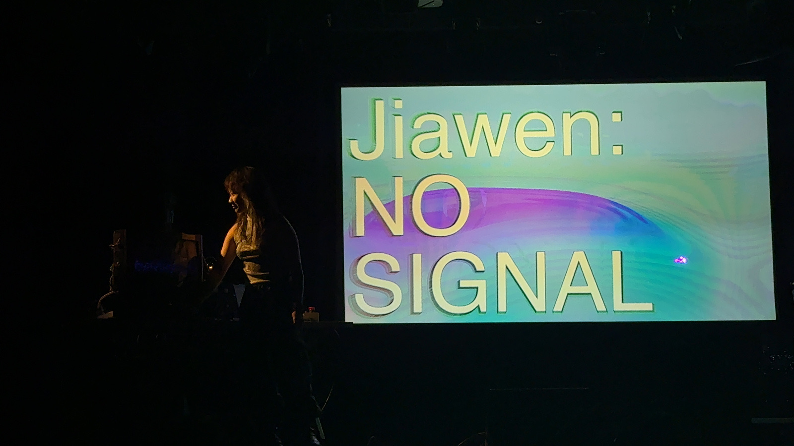
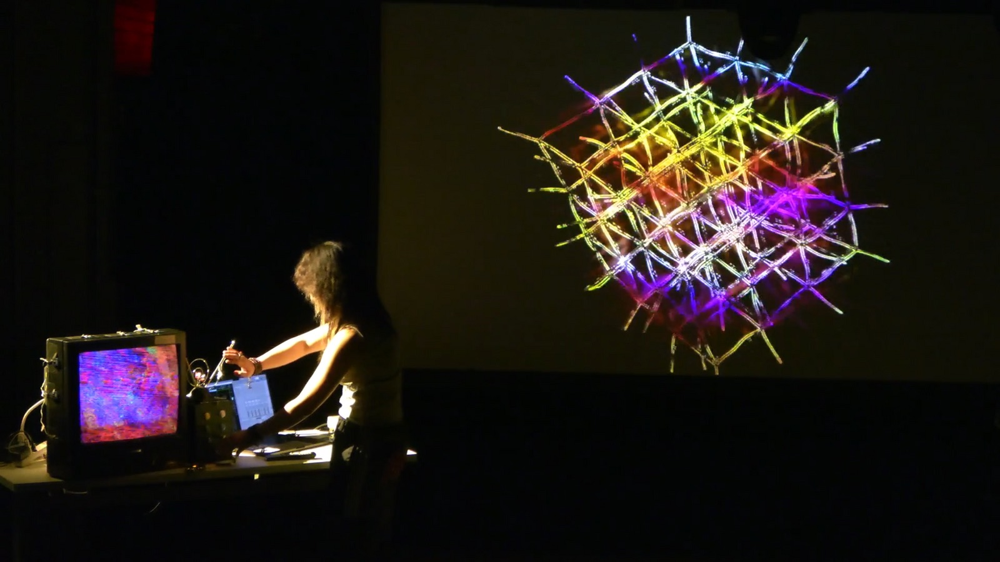
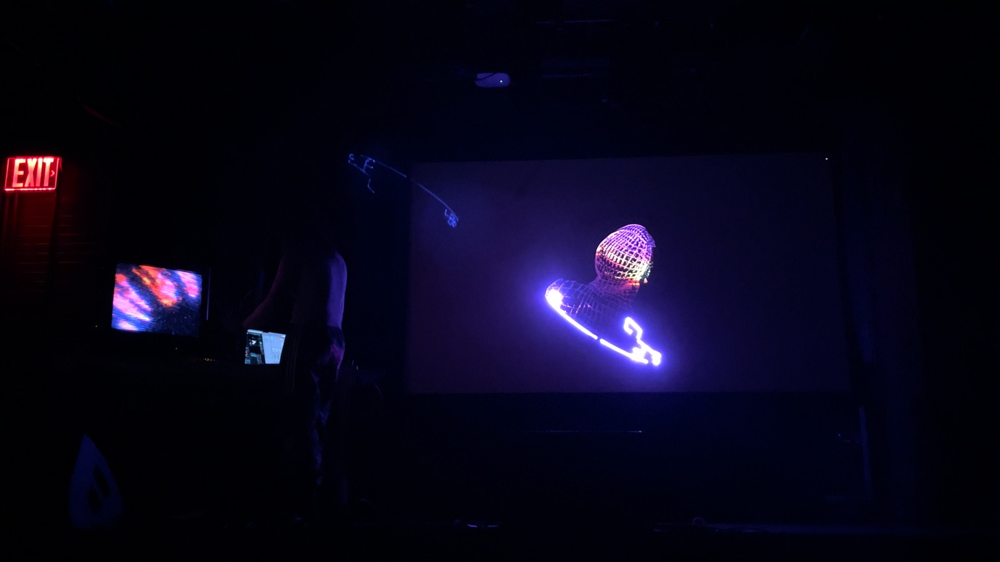
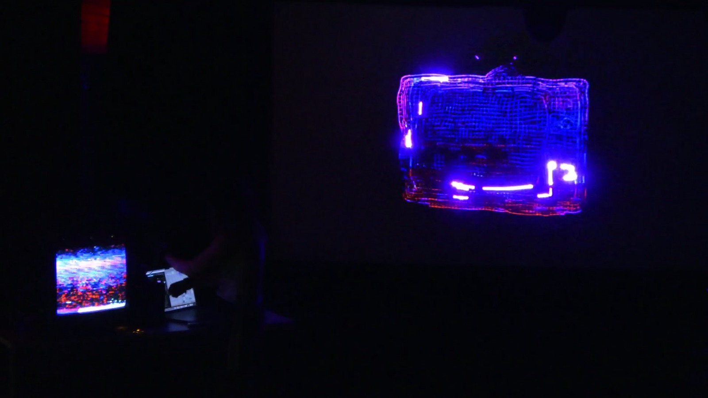
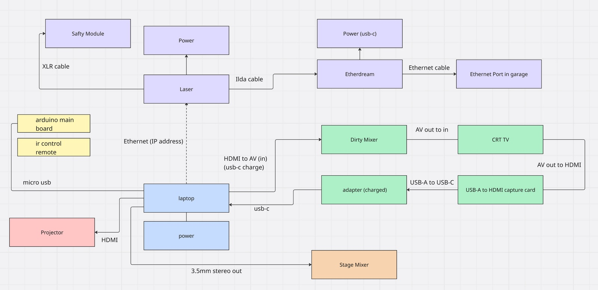
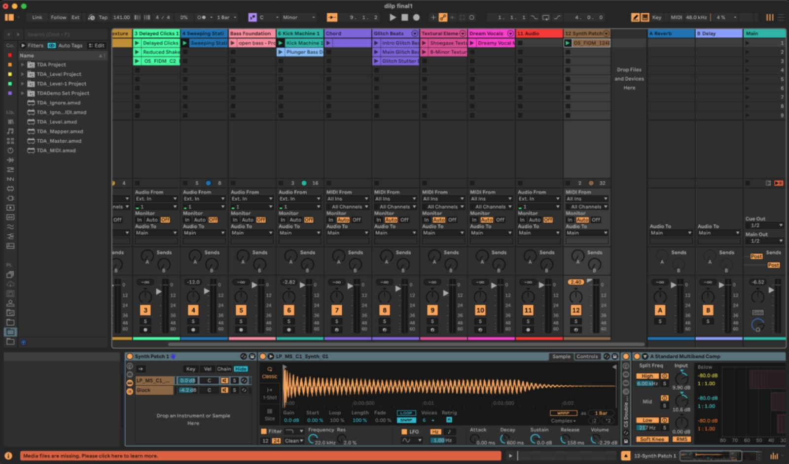
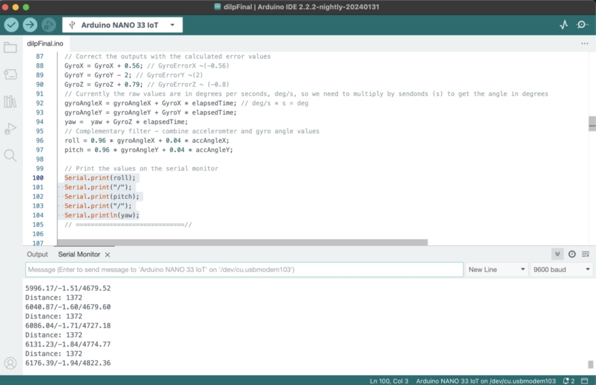
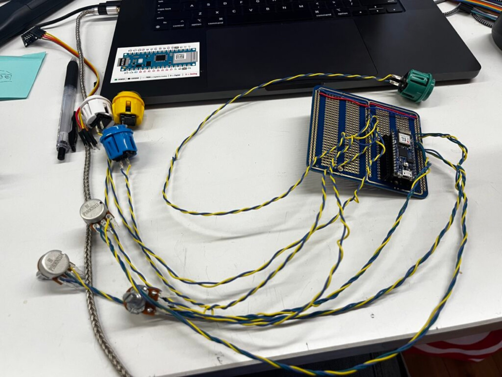

No Signal
No Signal (2025) is an audio-visual performance that merges real-time rendering with analog–digital signal experimentation. At its core, the piece investigates the liminal space where image and sound lose their coherence, collapse into noise, and then re-emerge as transformed patterns of perception.
The performance employs a self-built MIDI controller as an extension of the body, granting tactile control over visuals that move fluidly from distorted analog television signals to immersive projection environments and the precision of laser-based light drawings. This hybridity—between obsolete broadcast technologies and contemporary rendering engines—creates a dialogue between eras of media, asking what it means to manipulate “signal” in a culture saturated by transmission, interruption, and mediated presence.
By intervening in the flow of signal—interrupting, bending, and re-routing it—the work frames “no signal” not as absence, but as a site of generative potential. Static, glitches, and feedback loops become aesthetic materials, shaping a live landscape where error is not failure but composition.
Ultimately, No Signal (2025) is less a performance than a live circuitry of perception—where human gesture, machine instability, and technological memory entwine.








StillsNulla: Sapien09–24–1953
Software used: Touchdesigner, Madmapper, Ableton Live 12, Arduino IDE, Resolume Arena
m phardware connectionsound designcodemidi making